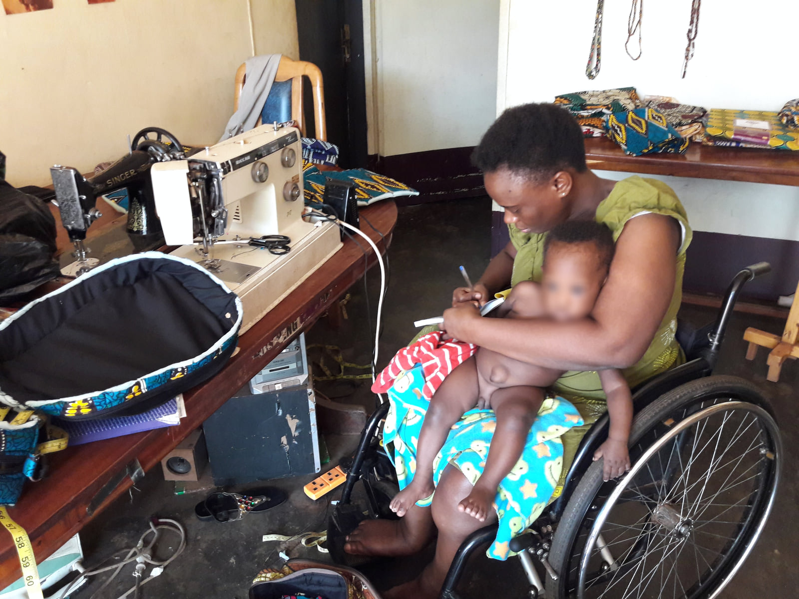
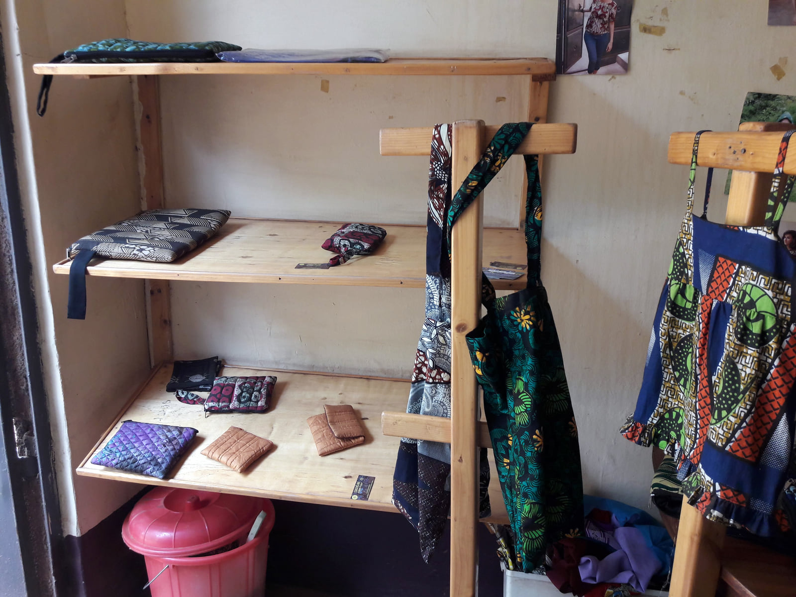

ABI Uganda partnership · Project archive
Supporting income, employment and access to markets
Ongoing support from 2018 with earlier archival photographs
Since 2018, the organisation has supported women living with different disabilities to develop income and employment through craft production. Working with ABI, the initiative has supported a small number of producers, purchased their products and helped find buyers in Europe. Its focus is on recognising women as skilled producers and strengthening opportunities for paid work.
Women with disabilities can face barriers when seeking paid employment. This initiative responds by supporting craft-based livelihoods and helping producers reach customers for their work. The photographic archive shows sewing, handmade bags and smaller craft products.
Anchored Bridges Initiatives (ABI), formerly Ability Beyond the Iris, is the partner organisation in Uganda. The archive includes craft photographs taken in July 2017. They provide an earlier visual record of the craft activity, while the ongoing support described in this report dates from 2018.

Support has included buying craft products from producers and seeking markets for them in Europe. Purchasing the work gives practical value to the producers’ skills and connects the support to demand for their products.
The organisation continues to buy products and intends to feature selected items in its forthcoming online shop. This planned shop will provide another way for supporters to discover the producers’ work.
Please support this work by choosing products made by the participating women when they become available and by helping connect their work with new customers. Continued interest in the products can help broaden opportunities for income and employment.

We thank the producers, ABI, customers and supporters who continue to value these skills and help build access to markets.
Download the project report as a PDF · Download the editable Word report
Programme figures and outcomes are reported by the project team.